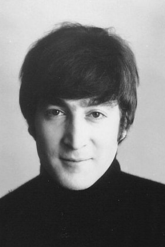
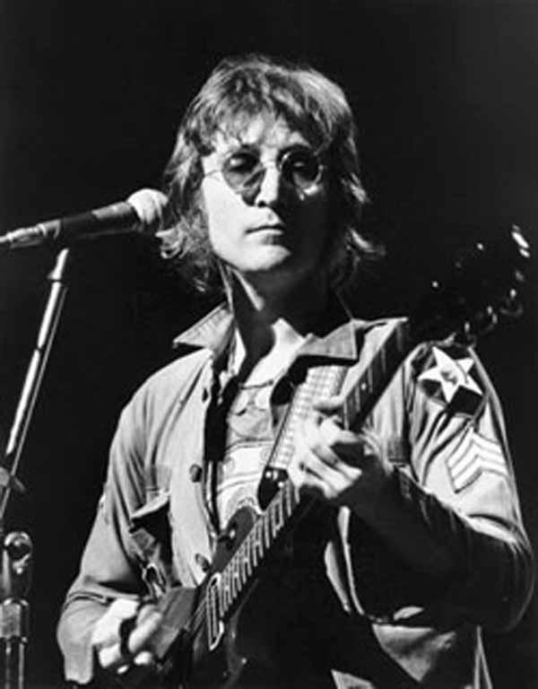
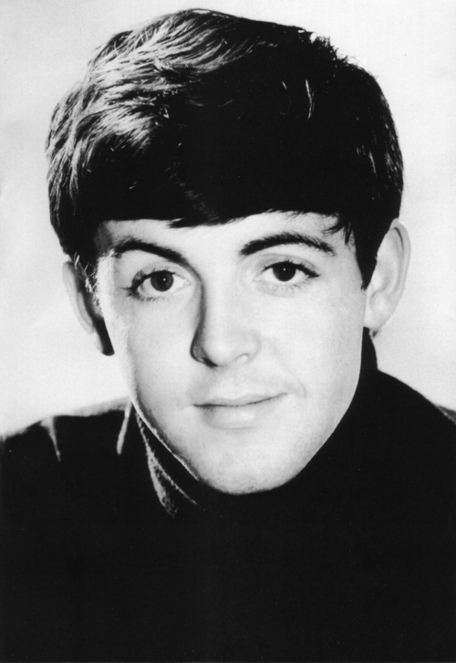
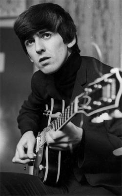
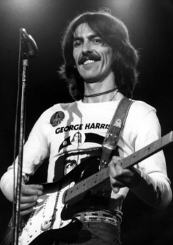
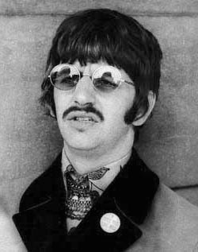
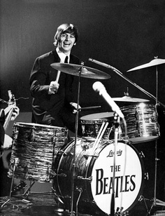

-
John Lennon

John Winston Ono Lennon, (born John Winston Lennon; 9 October 1940 – 8 December 1980) was an English musician, singer and songwriter who rose to worldwide fame as a founder member of the Beatles, the most commercially successful and critically acclaimed band in the history of popular music. With Paul McCartney, he formed a songwriting partnership that is one of the most celebrated of the 20th century.

-
Paul McCartney

Sir James Paul McCartney, (born 18 June 1942) is an English musician, singer, songwriter, multi-instrumentalist and composer. With John Lennon, George Harrison and Ringo Starr, he gained worldwide fame as a member of the Beatles, widely regarded as one of the most popular and influential acts in the history of rock music; his songwriting partnership with Lennon is one of the most celebrated of the 20th century. After the band's break-up, he pursued a solo career and later formed Wings with his first wife, Linda, and Denny Laine.

-
George Harrison

George Harrison, (25 February 1943 – 29 November 2001) was an English musician, singer and songwriter who achieved international fame as the lead guitarist of the Beatles. Although John Lennon and Paul McCartney were the band's primary songwriters, most of their albums included at least one Harrison composition, including "While My Guitar Gently Weeps", "Here Comes the Sun" and "Something", which became the Beatles' second most-covered song.

-
Ringo Starr

Ringo Starr, (born Richard Starkey; 7 July 1940) is an English musician, singer, songwriter and actor who gained worldwide fame as the drummer for the Beatles. On most of the band's albums, he sang lead vocals for one song, including "With a Little Help from My Friends", "Yellow Submarine" and their cover of "Act Naturally". He also wrote the Beatles' songs "Don't Pass Me By" and "Octopus's Garden", and is credited as a co-writer of others, such as "What Goes On" and "Flying".
